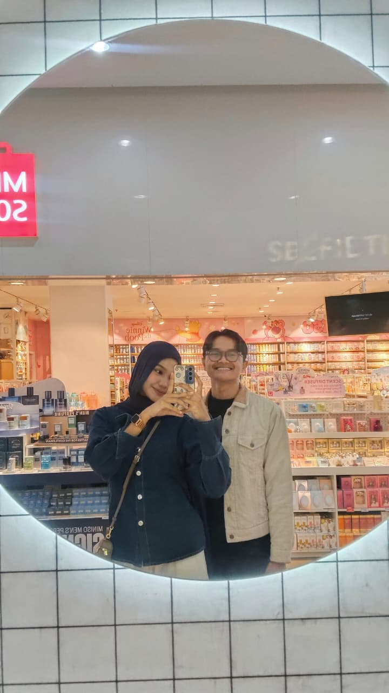
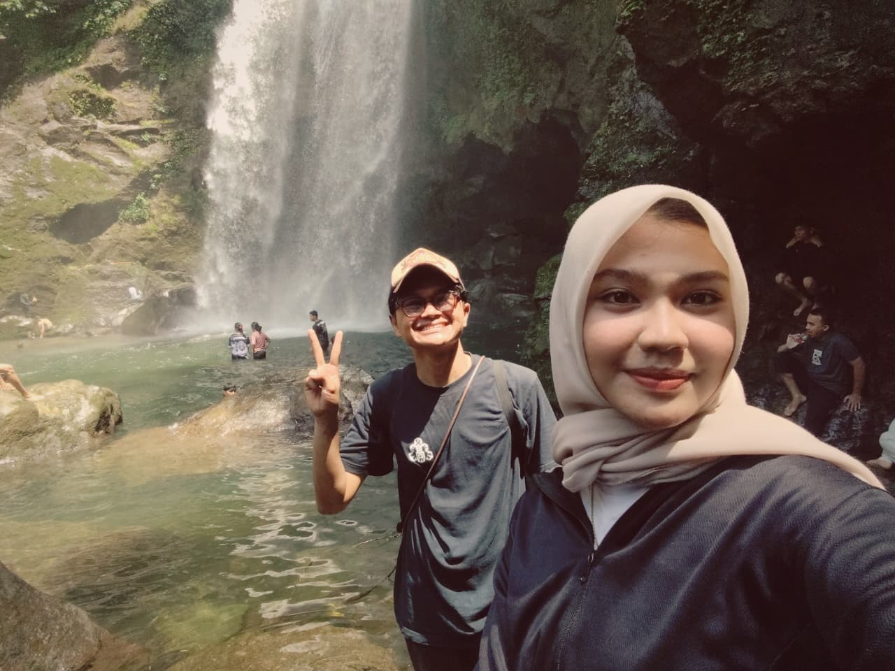
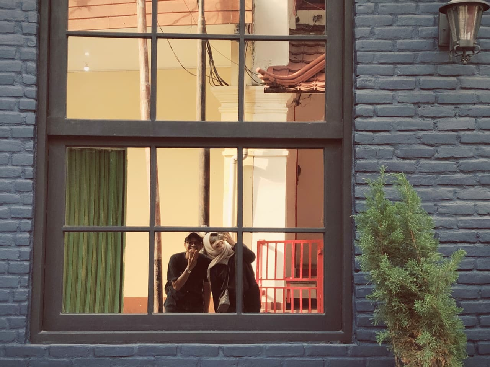
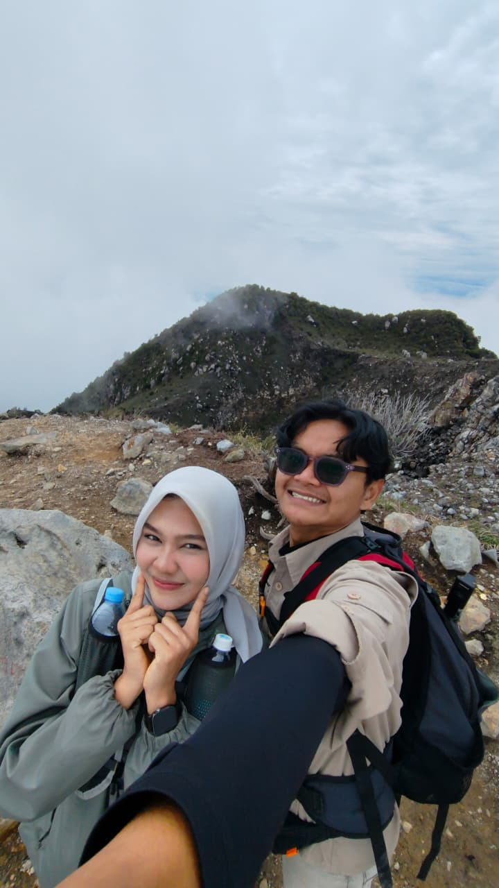
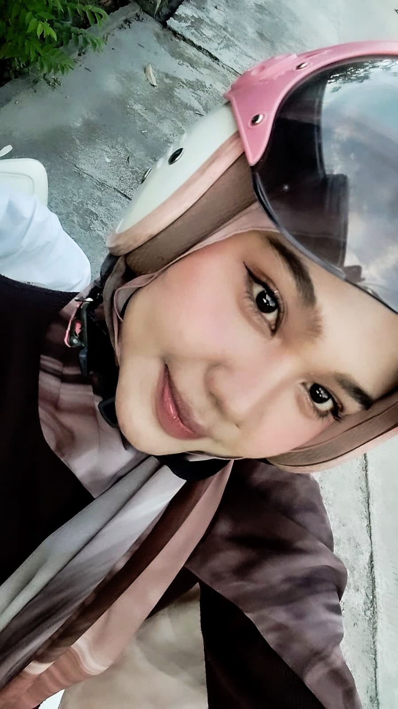
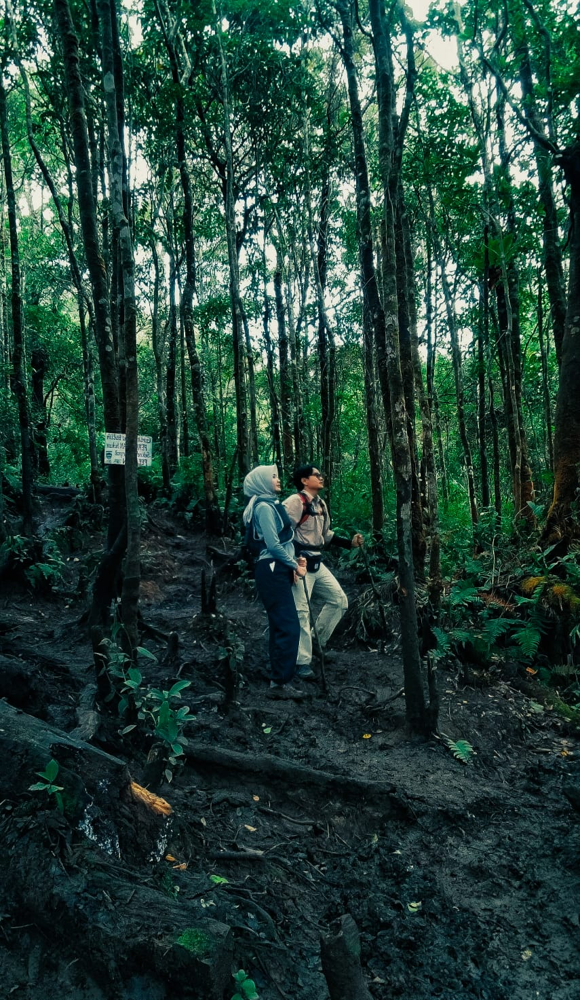
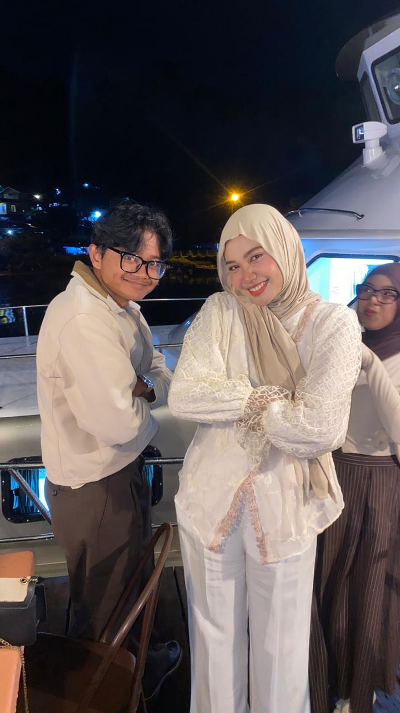
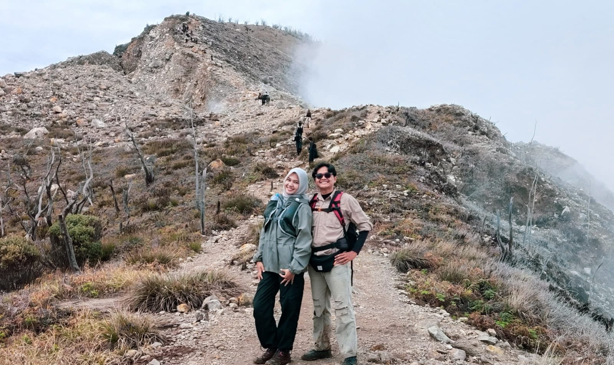
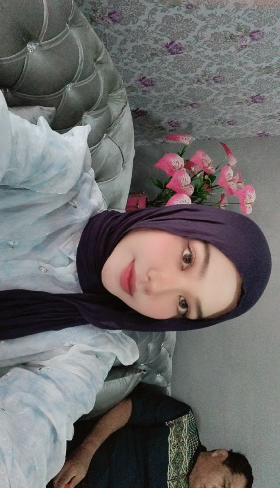

Ada sepucuk surat untukmu...
hola caayaaang are u okaay? cayang beneran tidaak kenapa-kenapa kann, soalnya aku ngerasa cayangg lagi ada yang dipikirin, jangan sungkan dan jangan gak enakan yaa kalo mau ngomong sama akuu. kann cayangg tau kalo aku bakal menerima cayang baik cayang lagi senang ataupun cayangg lagi sedih. ceritain ajaa cayangg kalo emanng ada sesuatu atau ada yang lagi cayang pikirin aku bakal nerima semuannya kokk. aku akan selalu ada buat cayang mau gimanapun itu. ohh iyaa cayangg, cayangg tauu kann kalo akuu bulan depan bakalan pergi kp ke dumai dan itu satu bulan aku perginya, sedih rasanya cayangg mikirin gak bisa ketemu cayang selama sebulan tuu. jadi aku buatin cayang satu sunflower supaya cayaang selalu inget akuu, dan aku sengaja jugaa bikimmya yang besar heheeee. terus buat wangi sunflowernyaa akuu semprotin jugaa parfum akuu tapi gaa tau juga bakal tahan lama atau engga tapii aku hanya berharap dengan adanya sunflower itu nggaaa membuat caayang jadii lupain akuuu.
maaf yaa kurang sempurna dan masih ada kurangg dari bungaanyaa, awalnya aku niatnya mau buat dan ngasihnya nantii beneran pas aku udah mau berangkat kp, tapi setelah sadar kalau ada sesuatu yang lagi cayangg pikirin jadi akuu buru-buru buatnya dan ngasih supaya cayang kembali happy lagi dan mau dan semoga cayangg mauu cerita ke aku aku apa yang lagii ccaayangg pikiiriin. yaudah cayangg dah kepanjangan juga kayaknyaa, pokoknya aku sayaangg bangett sama kamuudan semogaa aku bisa nepatin semua janji yang aku buat ke kamu yaaa, doain aku selaluu yaa. aku jugaa tetap akan berusaha dan berdoa jugaa LOVVEEE U SOO MUCHH CAYAANGGG
ituu tadi surat yang aku pengen kasih ke kamu kemaren, waktu kamu jujur sama aku, bahwa kamu butuh waktu dan space buat sendiri dulu. dan aku rencananya mau ngirimnya malem itu jugaa hehee, tapi ternhyata belum selesai codingannya dan masih ada yang gaa muncul jadi aku mutusin buat ga terusin dulu buatnya malam tadi. tapii setelah aku pikir-pikir lebih baik aku selesein aja dan tambahin aja ini sedikit.
ohh iyaa mungkin akuu juga akan jujur disini sama kamu, akuu sangat bersyukur dan bahagia banget bisa ketemu sama kamu. banyak hal-hal yang baru aku rasain saat aku ketemu dan bisa deket sama kamu, aku baru sadar kenapa banyakk orang mengejar orang-orang yang mereka sayangg, ternyata semenyenangkan ini yaa bisa deket sama orang yang sangat kitaa sayangg. kamu tauu gaa janji dan semua mimpi yuang aku bialng ke kamu dan aku pengen ngejalaninnya samaa kamu, ituu beneran aku tanem dalam diri aku harus aku tepatin dan lakuin. karena apa, karena sebahagia ituu akuu saat bareng sama kamu. akuu selalu berdoa sama Allah agar aku bisa ngelakuinn semuanya tanpa ngebuat kamu kecewa dan dengan cara yang buat kita saling bahagia. bagii aku, kamu bukanlaah wanita yang datang ke hidup aku dan lewat gitu aja, kamu adalah orang yang udah banyak memberi aku pandangan lain tentang bagaimana ngejalani hidup, jangan sampai menyesali sesuatu yang kita lakuin sedari awal. akuu bukan cuma sayang dan cinta sama kamu tapi kamu juga sangat berharga dan berarti bagii aku sekarang, seseorang yang ingin aku tunjukin kalau aku sukses dan mencapai sesuatau suatu saat nanti selain ibuk akuu. mungkin cuma itu yang aku mau billing ke kamuu.
makasiih yaa kamu udaah jujur sama perasaan kamu sendiri, dan aku tau kamu ngelakuinnya demi kamu dan akuu jugaa. maaf jugaa akuu ga menyadari hal itu. akuu gaa tau kalo kamu mikirin hal itu terus setiap hari yang membuat kamu kurang nyaman juga jadinya. kamu bilang lagii butuh waktu buat nyeleseinnya sendiri dulu yaa, apakah aku beneran gaa bisa yaa ngebantuin kamuu untuk hal ini. akuu juga ga maksaa kamu buat minta bantuan akuu, tapii karnaa akuu saaangaatt saayaangg sama kamu dan kamu orang pertama yang akuu sangaat sayangg, kalo emang ada yang bisa aku bantu selesein bilang ajaa yaa, kalo aku ga bales chat langsung aja call akuu, aku pasti bakal jadi orang pertama yang bantuin kamu. karna akuu juga ingin nolongin seseorang yang berharga bagi akuu, orang yang udah buat aku jadi lebih bahagia, orang yang udah membuka dunia baru bagi bagii akuu, dan orang yang udaah memberi warna baru ke hidup akuu yang menunjukkan kalo hidup tuu bukan sekedar hitam putih loh banyak warna lain yang harus dicoba, dilakuin dan dirasain. kalo memang kamu beneran mau mnyeleseinnya sendiri gapapaa, ituu pilihan kamu jugaa, akuu harap ini bukan jadi akhir bagi kita berdua yaa, yang akuu bisa lakuin cuma doain kamu supaya kamu selalu baik-baik ajaa, dan ingeet yaa akuu akan selalu adaa buat kamu.